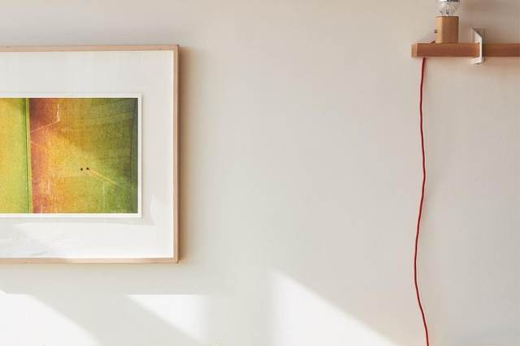
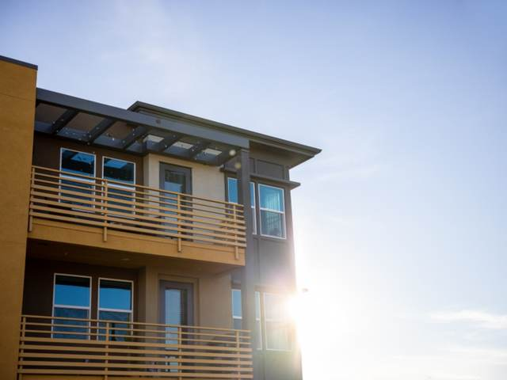
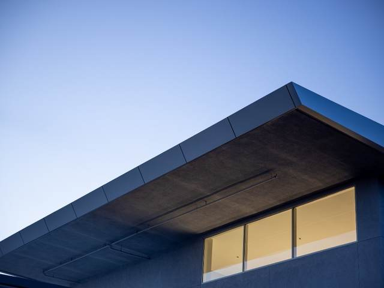
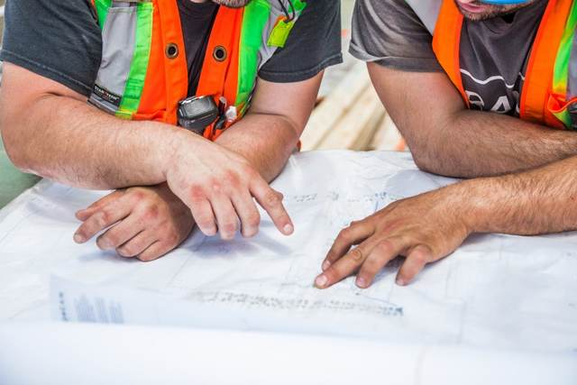
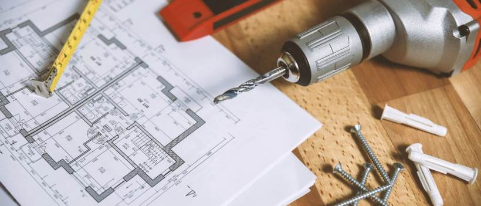

この写真のまま使えます（差し替えも自由）一
住宅の設計
敷地を見て、暮らし方を伺うところから始めます。日当たり、風、視線、動線。図面と模型でご確認いただきながら決めていきます。
住宅、店舗、共同住宅。敷地と法規と予算のなかで、その場所にいちばん合う形を探します。図面を描いて終わりではなく、建ち上がるまで見届けます。
住宅を中心に、店舗・共同住宅・公共施設の設計を行っています。計画のご相談から、確認申請、工事中の確認、竣工検査まで、一貫してお引き受けします。

この写真のまま使えます（差し替えも自由）敷地を見て、暮らし方を伺うところから始めます。日当たり、風、視線、動線。図面と模型でご確認いただきながら決めていきます。

この写真のまま使えます（差し替えも自由）事業の中身を伺い、使い勝手から逆算して計画します。内装制限や用途変更の手続きにも対応します。

この写真のまま使えます（差し替えも自由）賃貸住宅、集会所、学校施設。発注者・利用者・近隣それぞれの条件を整理したうえで、形を決めます。

この写真のまま使えます（差し替えも自由）図面のとおりに造られているかを、現場で確かめます。既存建物の調査、耐震診断、用途変更の相談も承ります。
ご相談から竣工まで。担当者が変わらず、最後までお付き合いします。
お話を伺い、敷地を見せていただきます。この段階の費用はいただきません。
配置・間取り・おおよその規模をご提案します。納得いくまで作り直します。
計画がまとまった段階でご契約いただき、図面を進めます。
施工に必要な図面を仕上げ、建築確認の手続きを行います。
見積りの内容を確かめ、工程と段取りを組みます。近隣へのご挨拶もこの段階です。
図面のとおりに進んでいるかを定期的に確かめます。竣工検査に立ち会い、図面一式をお渡しします。
敷地の形、法規、ご予算、暮らし方。ぶつかり合う条件のなかで、どれを立ててどれを譲るかを一緒に決めます。図面は、その結論を描いたものです。
面積、階数、屋根の形、開口の大きさ。金額が大きく動く箇所は決まっています。決める前にお伝えするので、あとから慌てずに済みます。
建築確認、用途変更、既存不適格の扱い。手続きでつまずくと工事は始まりません。そこを整理するのが設計者の仕事です。

代表者の写真が入ります建築の仕事は、線を引くことではなく、条件を整理することだと思っています。
敷地の形、法規、予算、ご家族の暮らし方。ぶつかり合う条件のなかから、どれを立ててどれを譲るかを一緒に決めていく。図面はその結論を描いたものです。
建物は建ててから何十年も使われます。竣工したあとに「こうしておけばよかった」ができるだけ少なくなるように、決める前にとことん話をさせてください。
| 名称 | （御社の情報が入ります） |
|---|---|
| 代表者 | （御社の情報が入ります） |
| 所在地 | 新潟県長岡市城岡１－７－９ |
| 電話 | 0258-32-2788 |
| 設立 | （御社の情報が入ります） |
| 資本金 | （御社の情報が入ります） |
| 所員数 | （御社の情報が入ります） |
| 建設業許可 | （御社の情報が入ります） |
| 建築士事務所登録 | （登録番号が入ります） |
| 有資格者 | （御社の情報が入ります） |
| 加盟団体 | （御社の情報が入ります） |
図面を、
最後まで見届けたい人へ。
担当した仕事を、計画から竣工まで通して見ることができます。確認申請も現場も、先輩について一通り覚えてください。資格の受験費用は会社が負担します。
| 募集職種 | 意匠設計／設計補助 |
|---|---|
| 仕事の内容 | 住宅・店舗・共同住宅の設計と工事監理。図面作成、模型、確認申請の手続き、現場の確認。 |
| 応募資格 | 要普通自動車免許。CADが使える方。二級建築士・実務経験は問いません。 |
| 給与 | 月給◯◯◯,◯◯◯円〜◯◯◯,◯◯◯円（経験を考慮のうえ決定） 賞与年◯回／資格手当あり |
| 勤務時間 | 9:00〜18:00（休憩60分） 平均残業時間 月◯◯時間程度 |
| 休日・休暇 | 年間休日◯◯◯日（土曜・日曜・祝日） 夏季・年末年始・有給休暇（年5日以上の取得義務） |
| 待遇 | 各種社会保険完備／資格取得支援（受験費用は全額会社負担）／退職金制度 |
| 応募方法 | お電話またはメールにてご連絡ください。まずは見学だけでも構いません。 |
新築・改修のご相談、お見積り、採用のお問い合わせ。初回のご相談は無料です。